쿨러 매뉴얼을 넣고 미리 보기
왼쪽 지식 관리를 누르세요. 오른쪽에 매뉴얼 등록이 열립니다.
**제공 문서(받기)**의 첫 링크 HM-8_cooler-fan-manual.md를 눌러 받으세요. 다른 세 문서는 받지 않습니다.
파일 선택으로 받은 파일을 고르세요. 버튼 옆에 파일 이름이 나옵니다.
등록할 문서에서 같은 이름 옆에 문서 개정이 붙은 항목을 고르세요. 같은 문서의 개정으로 묶여야 내용을 비교할 수 있습니다.
담당자가 지식 관리자인지 보고 미리보기를 누르세요.
확인: 버튼 아래에 파일 이름과 글자 수 · 절 · 절차 수가 나옵니다. 수정할 항목 있음은 뒤의 추출 · 검토에서 채울 곳이니 그대로 둡니다.
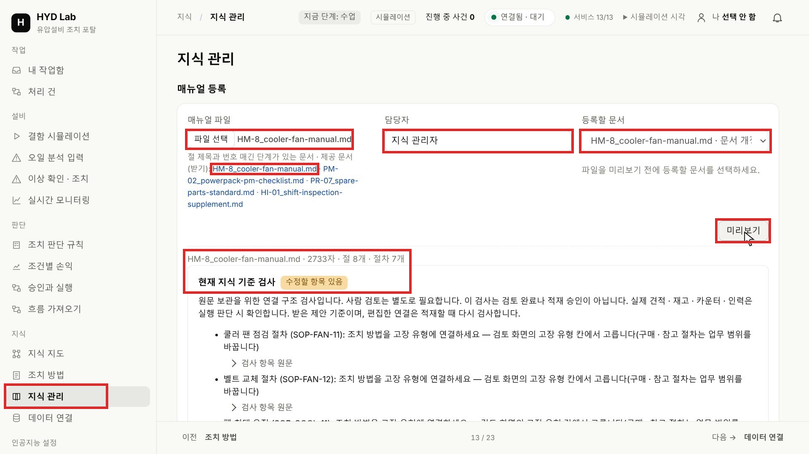
매뉴얼 원문에서 판단 조건 찾기
뒤에서 AI의 추출과 비교할 기준을 원문에서 먼저 찾습니다. 아래로 내려 추출 원문 전체 보기를 누르고 1쪽 전체를 펼치세요.

원문 칸을 굴리며 아래 다섯 곳을 차례로 읽으세요.
벨트: 상태 확인과 교체가 따로 있습니다.
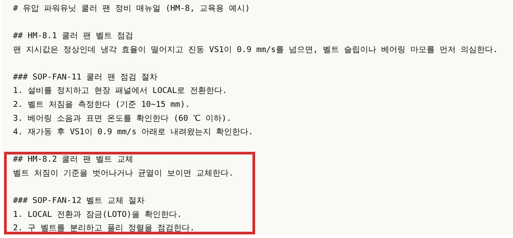
판정 기준: 유온, 냉각 효율, 유온이 계속 오르는지를 함께 봅니다.

핀 오염: 어떤 값을 몇 초 · 몇 분 평균으로 보는지 찾으세요.
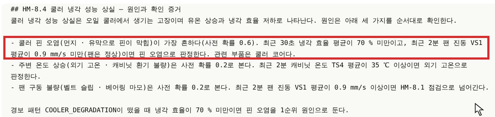
회복 판정: 조치 뒤 몇 분 동안 무엇이 유지되어야 하는지 찾으세요.
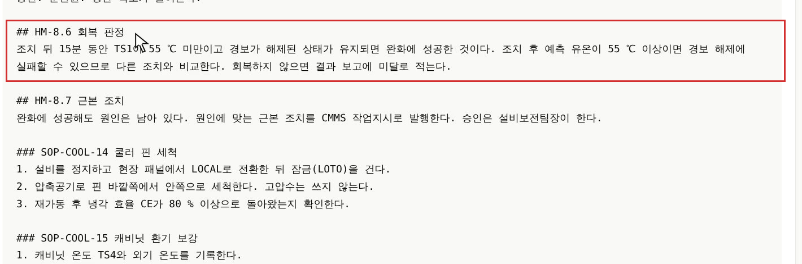
핀 세척 절차와 금지 · 제한: 원격 조치가 되는 운전 모드와 팬 연속 운전 제한을 찾으세요.
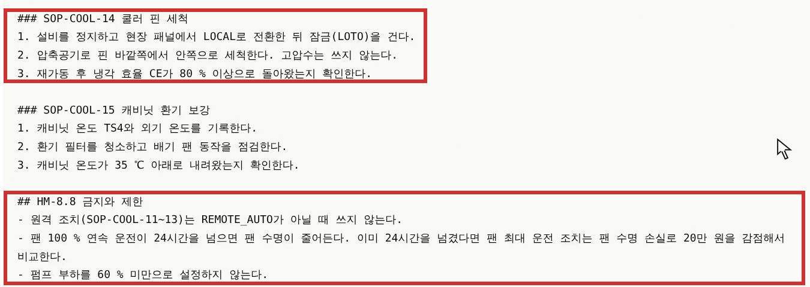
확인: 핀 오염을 가리는 두 평균값, 회복으로 볼 시간, 원격 조치가 되는 운전 모드를 원문에서 짚을 수 있습니다.
추출을 요청하고 조치 방법을 원문과 비교하기
원문 칸 아래 추출 제안 준비를 한 번 누르고, 안내가 나오면 추출 진행 · 결과 확인을 누르세요. 이 문서의 추출 작업이 완료가 될 때까지 기다립니다. 진행 중이면 잠시 뒤 추출 진행 · 결과 확인을 다시 누르세요.

검토할 제안이 나옵니다. 아직 지식이 아니라 사람이 검토할 제안입니다.

등록할 조치 방법의 첫 항목부터 원문 인용을 펼쳐 관계 · 종류 · 작업 단계를 원문과 비교하세요. 영어가 섞인 이름 · 번호 칸은 몰라도 됩니다.
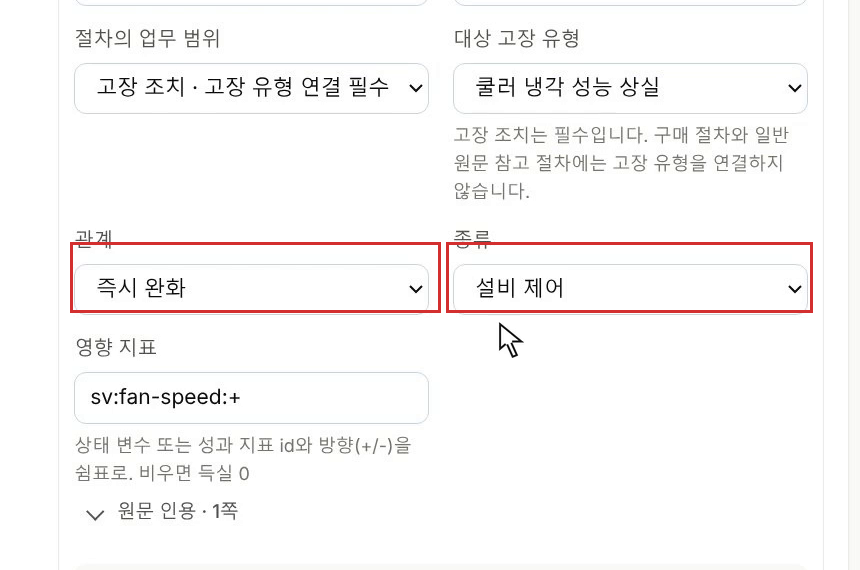
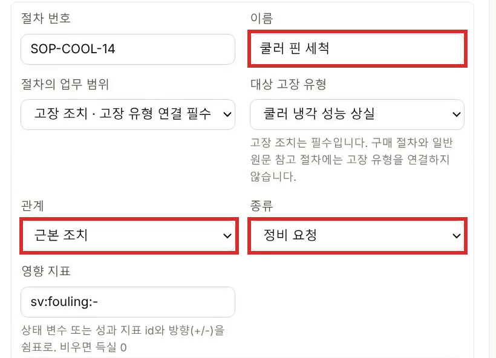
나머지 항목도 아래 표대로 비교하세요.
| 조치 방법 | 원문과 맞춰 볼 것 |
|---|---|
| 팬 최대 운전 | 팬을 올리기 전에 운전 모드를 확인하는지, 올린 뒤 다시 관측하는지 |
| 팬 최대 운전과 부하 80 % | 부하를 낮추는 대상과 값. 생산 속도에 영향을 주므로 팬만 바꾸는 조치와 구별 |
| 부하 70 %와 야간 핀 세척 | 팬 속도는 그대로 두고, 부하를 낮추는 단계와 야간 정비 요청 단계가 함께 있는지 |
| 쿨러 핀 세척 | 정지와 잠금을 거쳐 사람이 작업하는 근본 조치인지 |
| 캐비닛 환기 보강 | 작업 전 온도 기록과 작업 뒤 온도 확인이 모두 남았는지 |
| 쿨러 팬 점검 | 정지와 현장 제어, 벨트 · 베어링 점검, 재가동 뒤 진동 확인 순서 |
| 벨트 교체 | 현장 제어로 바꾸고 잠금을 확인한 뒤 시작하는지 |
확인: 일곱 조치의 관계 · 종류 · 첫 단계가 원문과 맞습니다. 어긋난 칸은 원문대로 고치고, 원문에 근거가 없는 항목은 제외에 표시하세요. 판단은 사진이 아니라 원문과 비교해서 합니다.
지식 후보를 원문과 비교하기
아래로 내려 추출한 지식 후보의 각 항목에서 원문 인용을 열어 비교하세요.
원인: 핀 오염, 주변 온도 상승, 팬 구동 불량을 어떤 관측으로 구분하는지 봅니다.
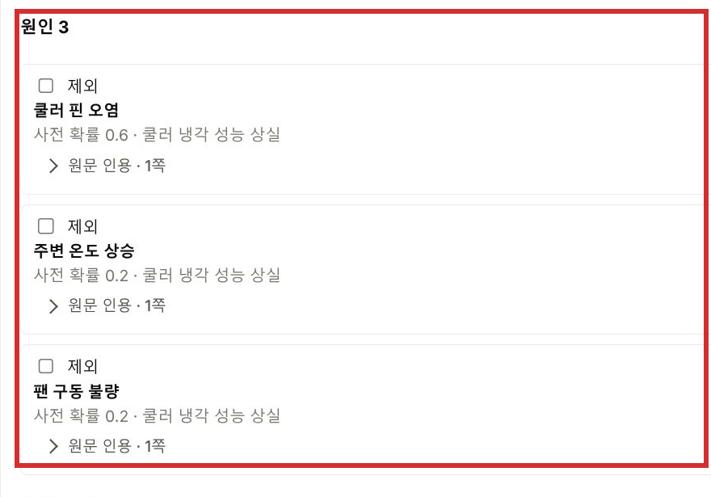
확인 증거: 평균 시간과 비교 방향(낮은 진동 · 높은 진동)을 봅니다.

규칙: 굵은 글씨의 조건만 보세요. 원격 자동이 아니면 원격 조치를 빼고, 팬 최대 운전이 연속 시간 기준을 넘으면 비용을 감점하며, 예측 유온 경고는 다른 대안과 비교하라는 뜻입니다.
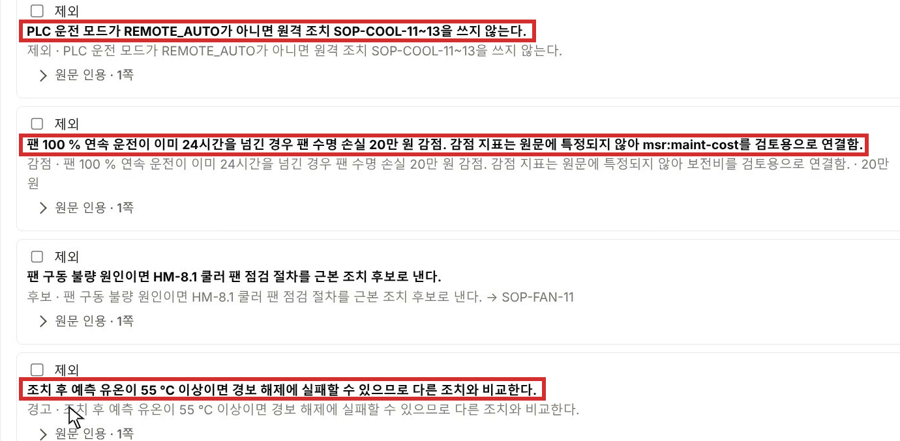
확인: 원인 셋 · 확인 증거 넷의 조건이 원문과 맞습니다. 어긋나면 고치거나 제외에 표시하세요.
추출 경고를 읽고 지식으로 적재하기
위로 올라가 추출 경고 원문을 펼치고 두 번째 경고를 읽으세요. 벨트 교체는 현장 점검(처짐 · 균열) 결과로 정합니다.
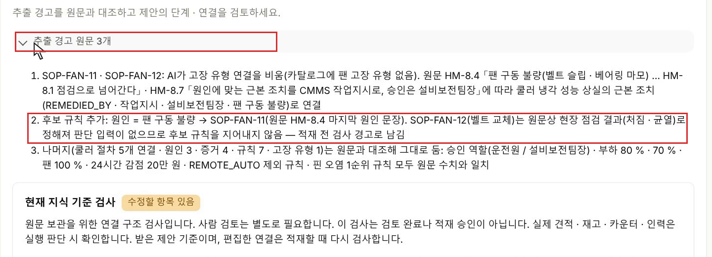
아래로 내려 원문 · 단계 · 고장 유형 · 관계를 검토했습니다에 체크하고 검토한 내용 적재를 누르세요.
확인: 적재 완료와 함께 절 · 조치 방법 · 단계 수, 후보 규칙에 연결된 고장이 나옵니다. 사진에서는 절 8 · 조치 방법 7 · 단계 25, 쿨러 냉각 성능 상실입니다. 제외한 항목이 있으면 수가 그만큼 다릅니다.

지식 지도에서 고장과 조치의 연결 찾기
왼쪽 지식 지도를 누르고 이름 검색에 쿨러를 넣으세요. 쿨러가 든 항목이 노랗게 표시됩니다.

지도를 굴려 고장 유형 아래의 노란 쿨러 냉각 성능 상실을 누르세요.
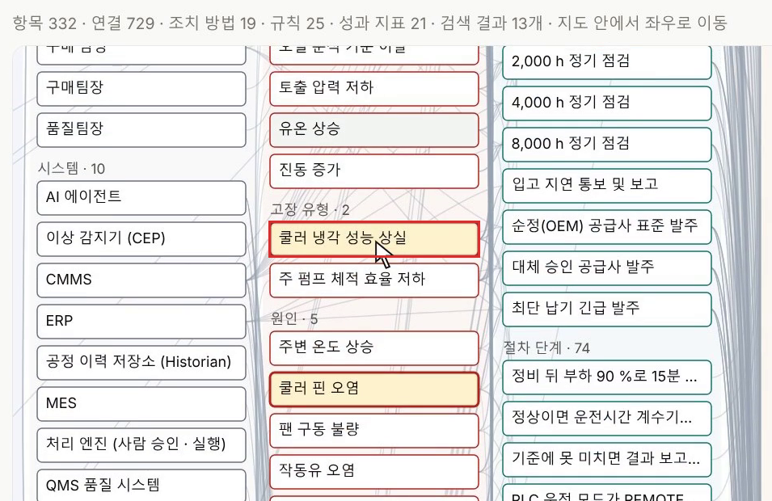
아래로 내려 나가는 관계에서 즉시 완화와 근본 조치를 찾으세요.

확인: 즉시 완화에 팬 최대 운전, 근본 조치에 쿨러 핀 세척이 있습니다. 없으면 지식 관리의 적재 결과부터 다시 보세요.
운전원을 고르고 쿨러 열화 일으키기
왼쪽 내 작업함을 누르고 나에서 최운전 · 운전원을 고르세요. 승인은 이 역할로 합니다.

왼쪽 결함 시뮬레이션을 누르고 HYD-01 카드의 운전 모드 · 유온 · 냉각 효율을 먼저 읽어 두세요. 사진에서는 원격 자동, 48.0 ℃, 84 %입니다.

카드를 아래로 내려 결함 실험 · A 긴급 대응의 쿨러 열화 주입을 한 번 누르세요.
결함이 이미 진행 중이거나 쿨러 성능 비율이 100 %가 아니면, 먼저 쿨러 복구를 누르고 감지기가 다음 경보를 기다립니다가 나온 뒤 주입하세요.
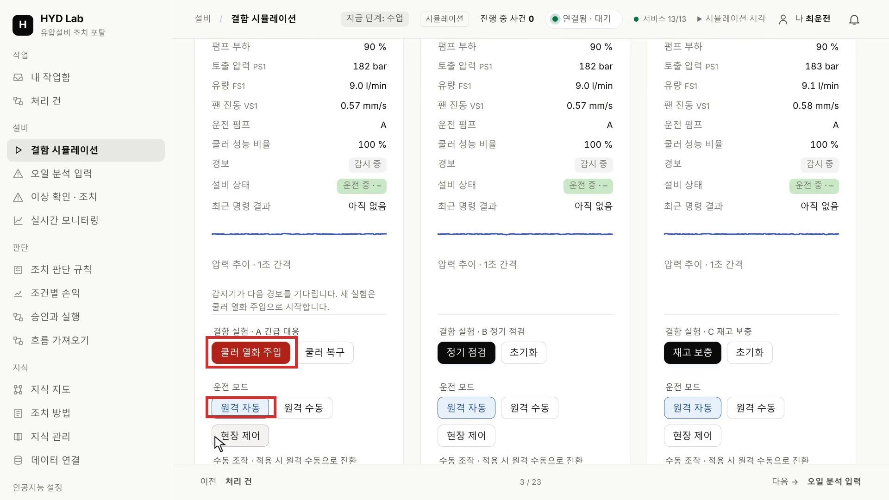
화면을 그대로 두고 기다리세요. 쿨러 성능 비율과 냉각 효율이 떨어지다가, 강사 화면에서는 1분 안에 경보 칸이 경보 발생으로 바뀌었습니다.

왼쪽 처리 건을 누르고 새로 생긴 냉각 긴급 대응 HYD-01을 누르세요. 보이지 않으면 다시 읽기를 누릅니다.

진행 상황 탭을 누르세요.

확인: 원인 진단이 끝났고 운전원 승인이 진행 중입니다. 원인 진단이 아직 진행 중이면 조금 기다리세요.
추천과 근거를 읽고 승인하기
왼쪽 내 작업함의 내 작업에서 운전원 승인 요청을 누르세요.
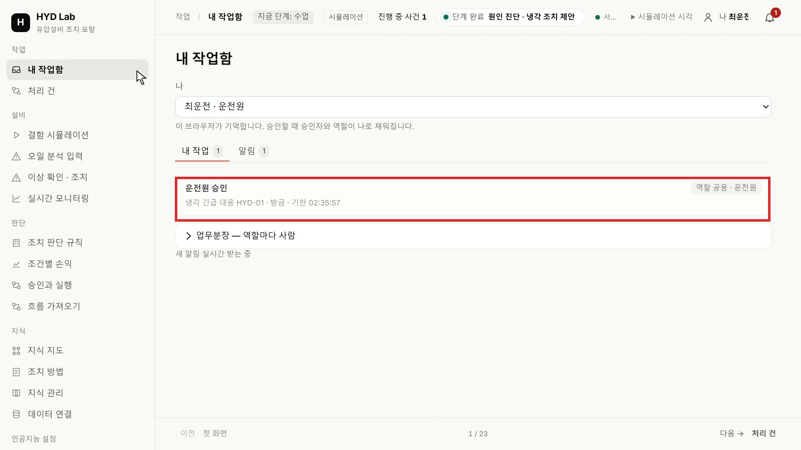
받은 입력의 조치 카드 묶음을 읽으세요. 관측값이 앞에서 찾은 매뉴얼 조건과 맞는지, 추천안이 지금 운전 모드에서 실행되는지 봅니다. 사진의 추천안과 같다는 것만으로 승인하지 않습니다.
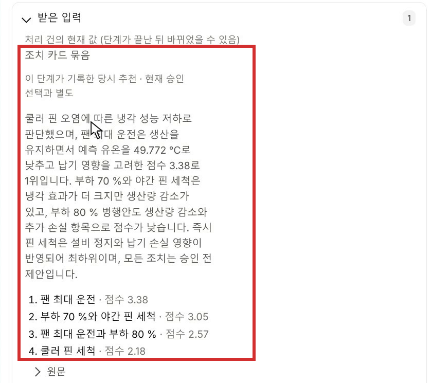
아래로 내려 승인하면 나갈 명령과 근거를 읽고, 역할이 운전원인지 보세요.
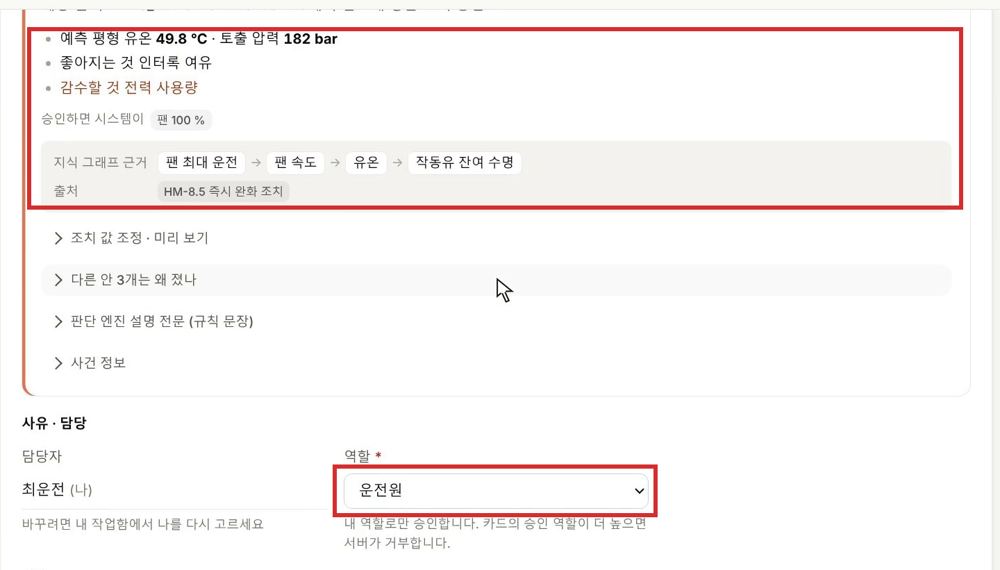
조건이 맞으면 오른쪽 아래 승인을 누르세요. 거절하려면 사유에 까닭을 적습니다.
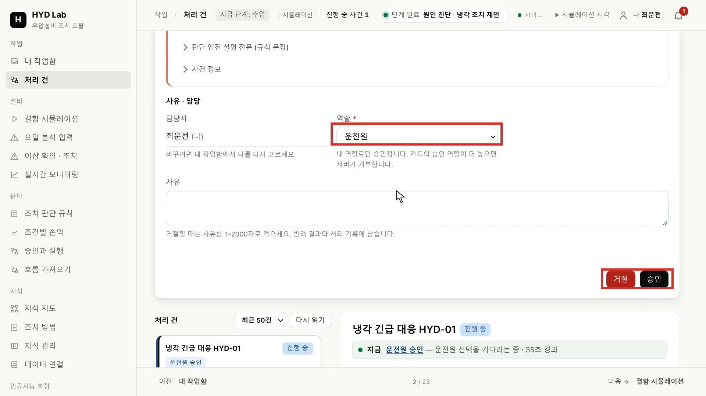
처리 과정에서 운전원 승인을 펼치고 단계 자세히를 누르세요.
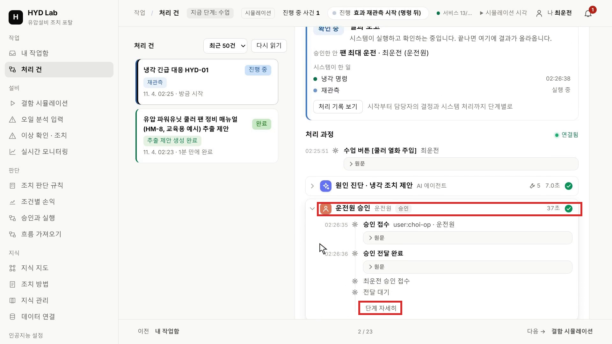
판단 · 출력을 펼치세요. 사진에서는 권고와 고른 조치가 둘 다 팬 최대 운전, 승인자는 최운전, 사유는 값 없음입니다.
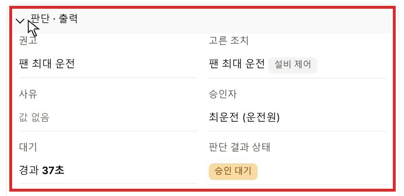
다음 단계로 넘긴 값을 펼치세요.
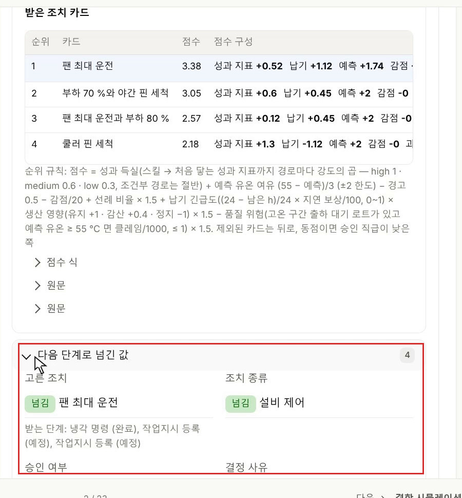
확인: 넘긴 값의 고른 조치가 내가 승인한 조치와 같습니다.
원인 판단에 쓰인 정보 확인하기
닫기를 누르고 원인 진단 · 냉각 조치 제안의 단계 자세히 → 받은 입력을 펼치세요. 경보 · 관측 값 · 판단 대상이 보입니다.
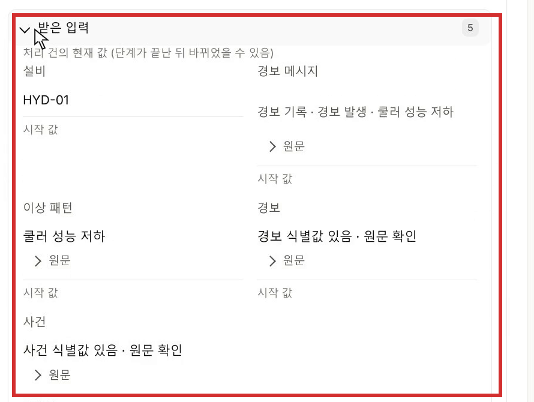
판단 · 출력의 원인을 읽으세요. 냉각 효율과 팬 진동 조건이 쓰였는지 봅니다.
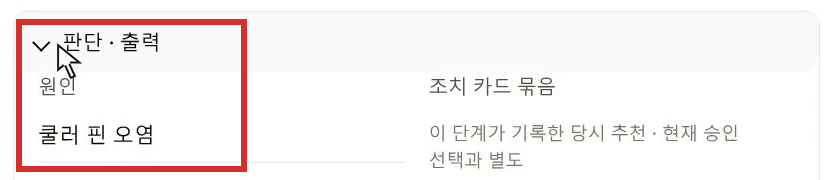
처리 과정을 펼쳐 AI가 어떤 정보를 찾아 확인했는지 보세요. 관측이 오래됐거나 센서 값이 빠졌으면 그 판단은 믿을 수 없습니다.

다시 판단 · 출력에서 판단 근거와 추천을 읽으세요. 어떤 관측과 운전 조건으로 후보를 남겼는지 봅니다.
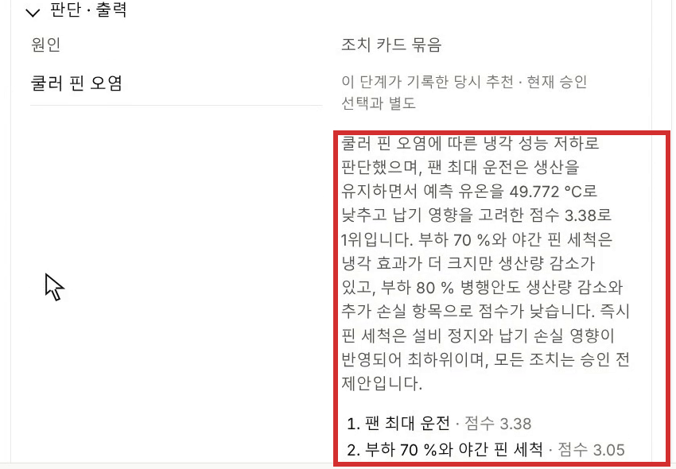
확인: 판단 근거의 조건이 매뉴얼 원문에 있습니다. 원문에 없는 조건이 있으면 근거가 부족한 판단입니다.
처리 기록에서 예측 · 명령 · 재관측 구별하기
닫기를 누르고 처리 기록 탭을 누르세요. 경보부터 승인, 시스템 처리까지 시간 순서로 나옵니다.

처리 순서의 원인 진단 · 냉각 조치 제안을 누르고 비교한 대안의 예측 유온을 읽으세요. 예측값이지 다시 잰 온도가 아닙니다.
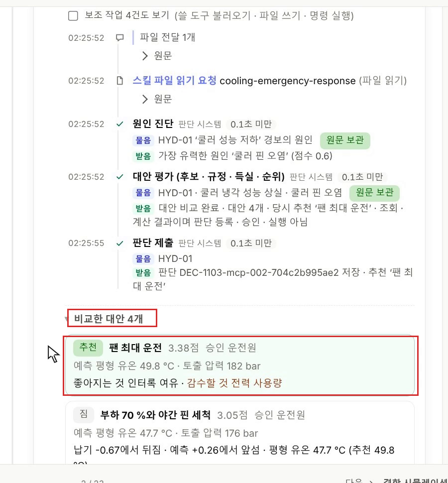
아래로 내려 냉각 명령에서 나간 명령과 설비의 확인 응답(ACK)을, 재관측에서 명령 뒤 다시 잰 값을 읽으세요. 확인 응답은 명령을 처리했다는 뜻이고, 유온 회복은 재관측으로 봅니다.
사진에서는 설비 시간 20분 동안 유온이 59.7 ℃에서 51.2 ℃로 내려갔고 기준 안에 있던 시간은 67 %입니다. 값은 실행마다 다릅니다. 원문의 회복 조건은 15분 연속 유지이므로 이 비율만으로는 연속 유지를 알 수 없습니다.
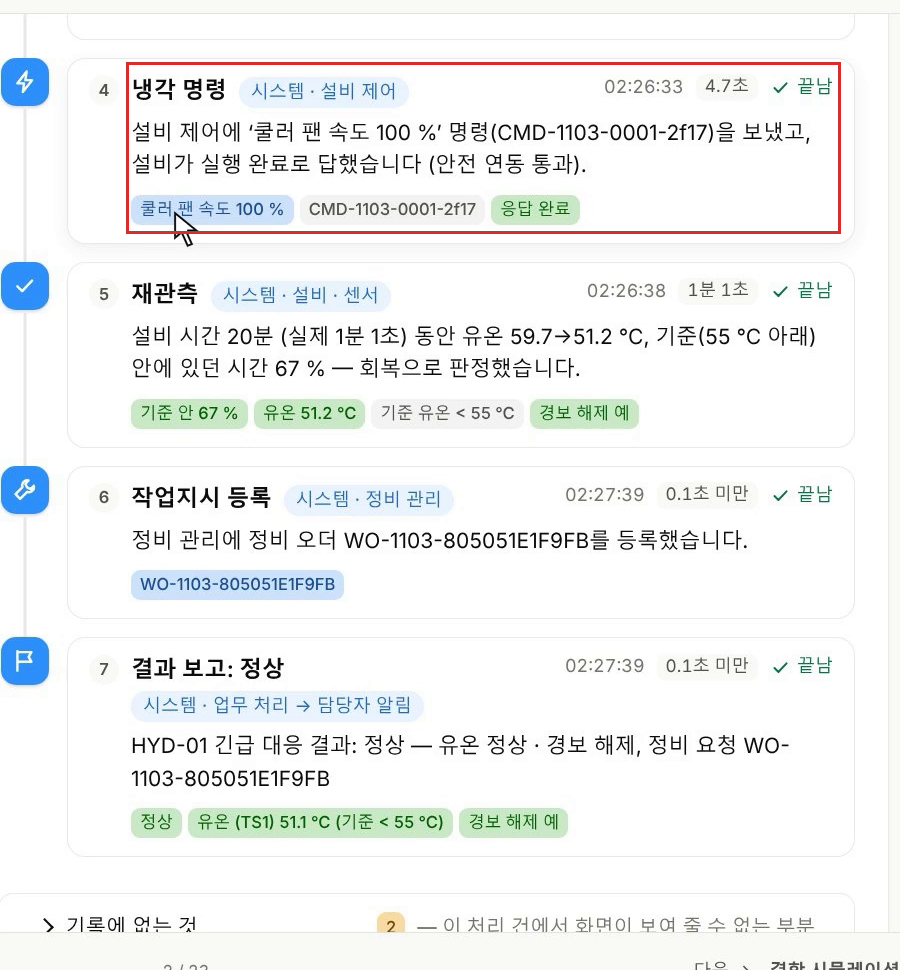
확인: 예측값, 확인 응답, 다시 잰 값을 각각 다른 자리에서 짚을 수 있습니다.
결과와 남은 정비 요청 확인하기
결과 탭을 누르세요. 정상 · 기준 미달 · 확인 중 가운데 무엇인지와 그 판단에 쓴 관측 값을 읽습니다. 유온이 기준 55 ℃ 아래로 내려왔고 경보가 해제됐다고 남지만, 매뉴얼의 15분 연속 유지까지 확인한 판정은 아닙니다. 처리 기록 보기를 누르세요.
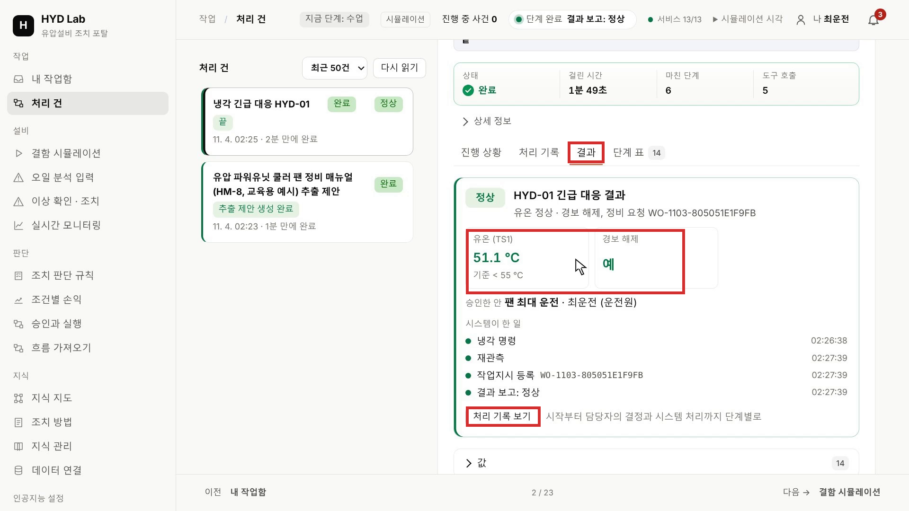
처리 순서의 작업지시 등록을 누르세요. 정비 요청이 등록된 것이지 정비가 끝난 것은 아닙니다.
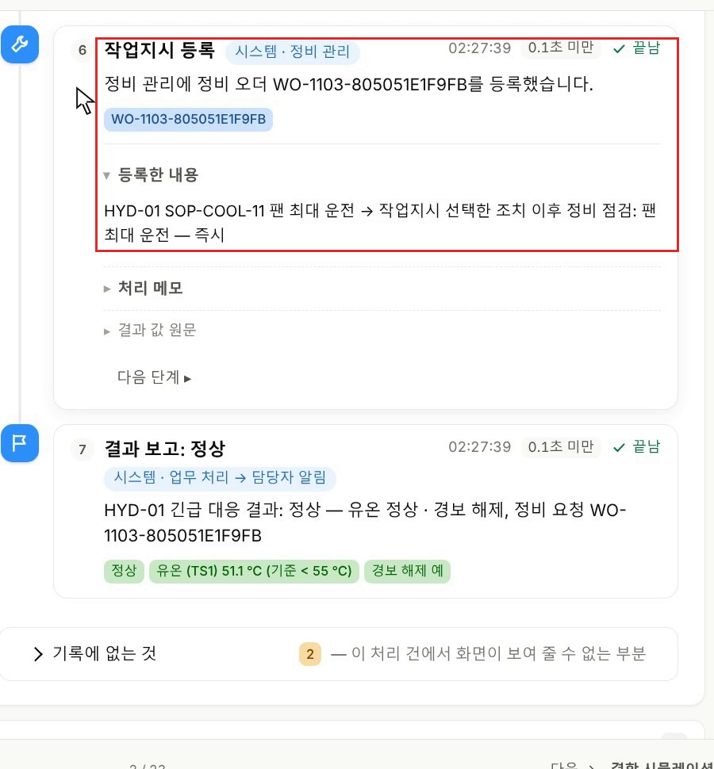
처리 순서 맨 위 센서 경보로 시작을 누르고, 원인 판단 → 승인 → 명령 → 재관측으로 내려가며 각 단계의 결과가 다음 단계의 입력이 됐는지 보세요. 기록의 뜻은 참고 교재 발췌에 있습니다.
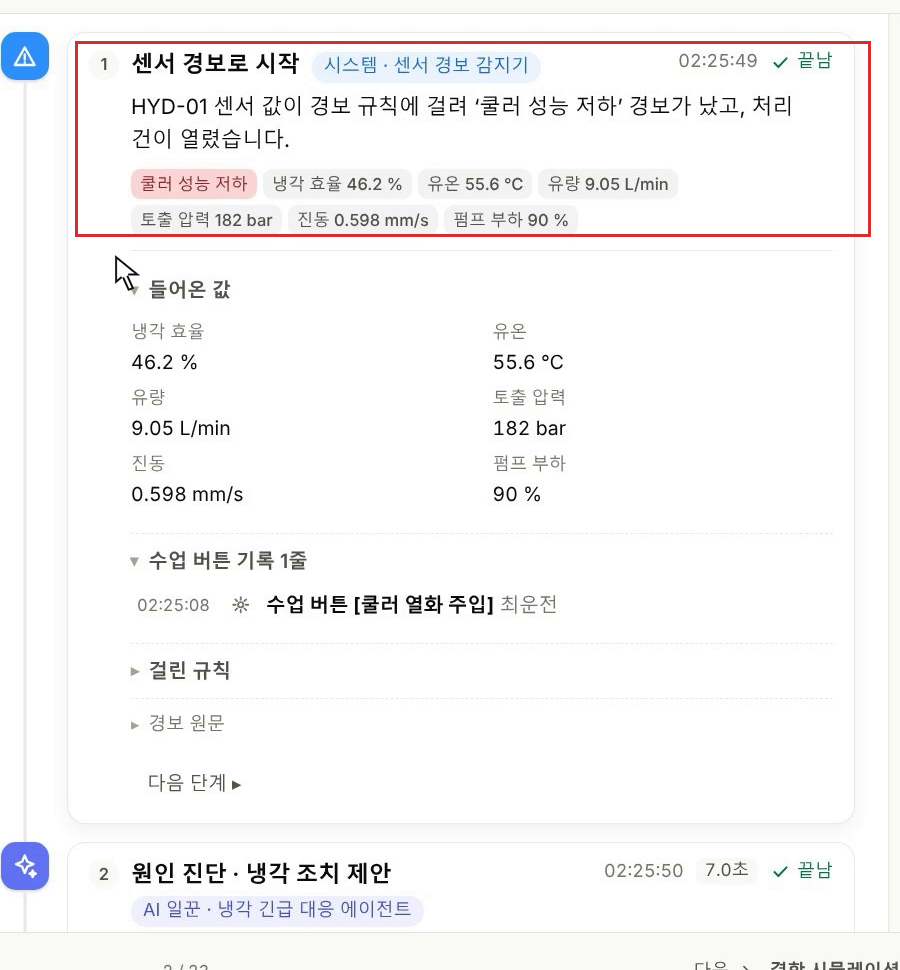
확인: 같은 처리 건에서 AI의 추천, 사람의 승인, 설비의 응답, 다시 잰 값, 남은 정비 요청을 차례로 가리킬 수 있으면 이 실습을 마친 것입니다.